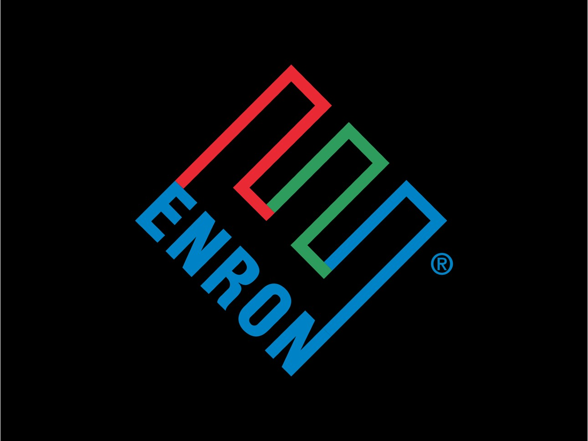

Overview
The Enron scandal was one of the largest corporate frauds in U.S. history, leading to the bankruptcy of Enron Corporation in 2001. It involved the use of accounting loopholes, special purpose entities, and poor financial reporting, resulting in billions of dollars in losses for shareholders and employees.
Timeline of Events
- 1985: Enron is formed from the merger of Lay Company and Houston Natural Gas.
- 1997: Enron becomes the largest seller of natural gas in North America.
- 2001: Enron files for bankruptcy on December 2, marking one of the largest bankruptcies in U.S. history.
- 2002: The Sarbanes-Oxley Act is passed to enhance corporate governance and financial disclosures.
Impact
The scandal led to thousands of employees losing their jobs and savings. It also prompted reforms in corporate governance and accounting practices in the U.S. The scandal shook investor confidence and highlighted the need for more stringent regulatory oversight.
Prompt
Can you write me an HTML page about the Enron scandal and include photos and make it look cool? Can you format it the same as my other pages? Side note - I added in the photo.